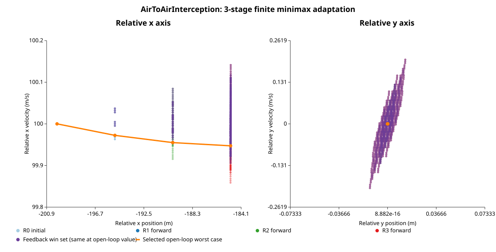

AirToAirInterception
Three stages at 0.05 seconds each adapt the source 2-second continuous-action RL task to finite action catalogues. Source explicit-Euler dynamics use 10 inner steps per stage. This is not an RL reproduction or a continuous-action solution.
Fixed open-loop minimax terminal range: 185.005042 m (125 plans × 125 disturbance sequences). Causal finite-state feedback minimax terminal range: 185.005042 m (dynamic programming over the exact reachable transition graph). The values coincide within 0 m for this finite adaptation.
The single purple layer shows causal backward-winning states at the feedback minimax value; those states coincide with the winning set at the open-loop minimax threshold. Feedback membership tolerance: 1.0e-08 m. These sets intersect the forward reachable layers. The orange path is the selected minimizing fixed open-loop plan under a maximizing disturbance sequence. Solver near-optimal tolerance: 1.0e-10. Timing: one observation, zero warmups, one worker/native thread, no workspace reuse, cold process; no performance comparison is claimed.

Horizontal and vertical relative-motion phase planes; forward reachable nodes are colored R0–R3.